LLM responses to cross-cultural emotional situations
- Mona J. Xue
- SUPERVISOR: Desmond C. Ong
Increasingly, people are turning to AI for emotional support
Increasingly, people are turning to AI for emotional support

Not just in the US
Not just in the US
Quote
[Ann Li, a 30-year-old Taiwanese woman, had] recently been diagnosed with a serious health problem, and she just wanted to talk to someone about it. But she hadn’t told her family, and all her friends were asleep. So instead, she turned to ChatGPT.
Not just in the US
Quote
In China, Yang, a 25-year-old Guangdong resident, had never seen a mental health professional when she started talking to an AI chatbot earlier this year. Yang says it was difficult to access mental health services, and she couldn’t contemplate confiding in family or friends.
Reasons to worry…
WEIRD LLM psychology
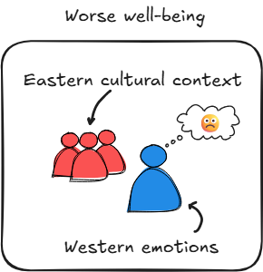
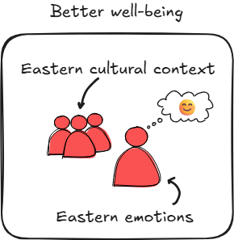
Cultural fit of emotions \(\rightarrow\) well-being
WEIRD: Western Educated Industrialized Rich and Democratic (Henrich et al. 2010)
Cultural fit of emotions (De Leersnyder et al. 2014; Kim and Mesquita 2026)
Reasons to worry…
WEIRD LLM psychology
\(\rightarrow\)
WEIRD: Western Educated Industrialized Rich and Democratic (Henrich et al. 2010)
Cultural fit of emotions (De Leersnyder et al. 2014; Kim and Mesquita 2026)
Reasons to worry…
WEIRD LLM emotions?
\(\rightarrow\)
WEIRD: Western Educated Industrialized Rich and Democratic (Henrich et al. 2010)
Cultural fit of emotions (De Leersnyder et al. 2014; Kim and Mesquita 2026)
Do LLMs have Western emotion perceptions?
Are these concerns even if users are…
- prompting in Chinese?
- using a Chinese LLM?
Existing evidence
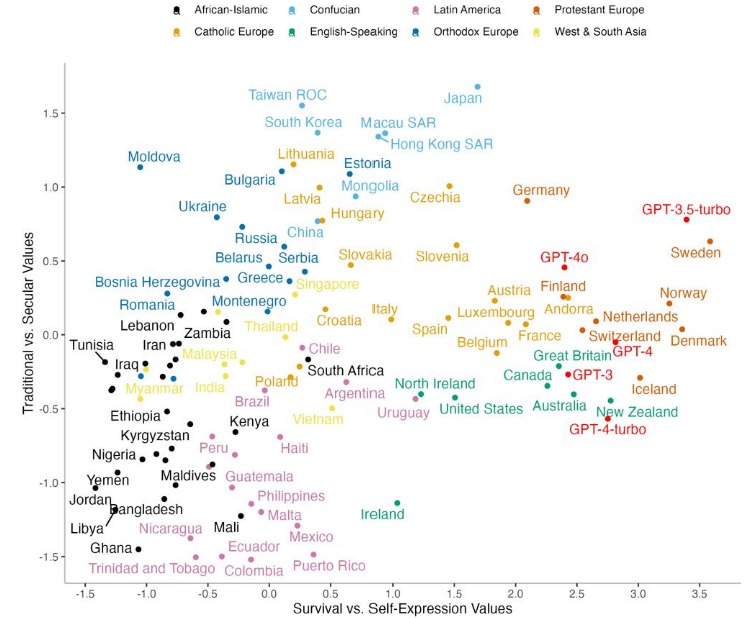
Studies prompting LLMs with surveys like the World Value Survey find a WEIRD bias. The figure is from Tao et al. (2024).
LLM emotions
- Evidence of WEIRD bias
- Prompting language models with non-English languages still resulted in emotion concepts that were more similar to monolingual English LMs than to monolingual non-English LMs (Havaldar et al. 2023).
- Prompting GPT-3 with Japanese (vs. English) did not increase the likelihood that it completed sentences with more Japanese emotions. (Havaldar et al. 2023).
- Prompting LLMs with Japanese (vs. English) did not consistently result in more Japanese emotional and appraisal ratings in response to mixed emotions situations (Dudy et al. 2024).
Mixed findings on the impact of prompt language
- ✅ Lu et al. (2025) found that using Chinese prompts improved cultural alignment in questionnaires related to collectivism and “thinking style.”
- ❌ Bulté and Terryn (2026) found that prompt language did not improve cultural alignment of LLM responses in Hofstede Values Survey Model and World Value Survey.
Research questions
- Do LLMs exhibit cultural congruence when responding to emotional situations?
- Do LLMs exhibit cultural bias when responding to emotional situations?
Cultural congruence
Definition
Difference between more American LLMs and more Chinese LLMs
=
Difference between Western culture and Eastern culture
Cultural congruence
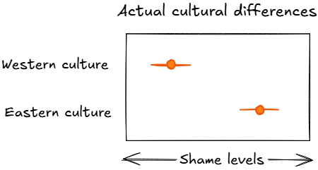
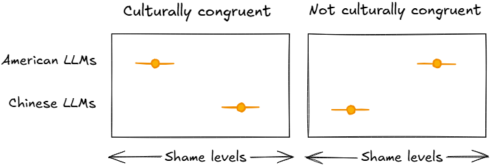
Cultural bias
Definition
- Do LLM responses look more like Western or Eastern responses?
- Are LLM shame levels more similar to Western shame levels or Eastern shame levels?
- Cultural bias can exist independently from cultural congruence.
4 contexts
Emotion levels
Anger, shame, and guilt
Attribution levels
Other, self, cicumstances attr. in negative situations
Humiliated fury
How much do feelings of shame also induce feelings of anger.
Importance of attribution
How much do differences in attribution impact emotional intensity.
4 contexts
Context
Emotion levels
Attribution levels
Humiliated fury
Importance of attr.
West
\(\uparrow\) Anger
\(\uparrow\) Attribution other
\(\uparrow\) Humiliated fury
\(\uparrow\) Importance of attr.
East
\(\uparrow\) Shame and guilt
\(\uparrow\) Attr. self and circ.
\(\downarrow\) Humiliated fury
\(\downarrow\) Importance of attr.
Our studies
- How do LLMs respond to emotional vignettes?
- Do they show cultural congruence or bias in our 4 contexts?
- Two studies
- Study 1: LLMs rate emotions and attributions of vignettes.
- Study 2: LLMs write internal monologues based on vignettes. Emotions and attributions are scored separately.
Study 1
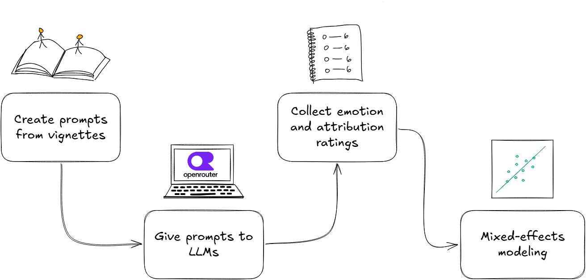
Vignettes
80 shame and anger vignettes from Boiger et al. (2013)
Vignettes \(\leftarrow\) diary entries from Japanese and American participants.
20
Japanese Shame
20
US Shame
20
Japanese Anger
20
US Anger
Example vignette
US anger vignette
Quote
John had made plans to meet with a friend at a restaurant right after his study group meeting. Forty minutes after the study group was supposed to have started, no one has shown up. Finally, one of the people from the study group called John and proposed to postpone the meeting by another hour.
Prompts
Main vignette + ratings text
Quote
How likely would this situation lead John to feeling angry, ashamed, or guilty? For each emotion, please rate the likelihood on a scale of 0 to 6, where 0 is “not at all likely” and 6 is “extremely likely”. Please answer with only a list of three ratings, one for each emotion, where the first number is the rating for anger, the second is the rating for shame, and the third is the rating for guilt. Please only answer with a list of numbers, with no words.
Quote
In this situation, how likely would John attribute the cause of the situation to, themselves, a person other than themselves, or the situation separate from the people involved? For each attribution, please rate the likelihood on a scale of 0 to 6, where 0 is “not at all likely” and 6 is “extremely likely”. Please answer with only a list of three ratings, one for each attribution, where the first number is the rating for self attribution, the second is the rating for attribution to other people, and the third is the rating for attribution to the situation. Please only answer with a list of numbers, with no words.
Model and prompt language combinations
- Two models: GPT 5.4 Mini and Qwen 3.5 Flash
- Two prompt languages: English and Chinese
Model and prompt language combinations
- We can prompt either model with either language.
| LLM model | Prompt Language |
|---|---|
| GPT | English |
| Qwen | English |
| GPT | Chinese |
| Qwen | Chinese |
Data collection
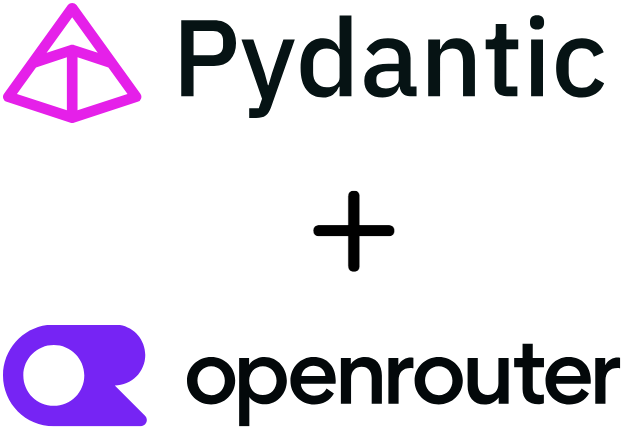
10
responses per prompt and LLM condition combination.
Statistical analyses
- Individual vignettes are treated as random effects
- We look at the effects of model on cultural congruence and the effects of language on cultural congruence.
Models are roughly of the form:
Score ~ (Construct \(\times\) Model) + (Construct \(\times\) Language)
Note: This model does not show any controls.
Cultural congruence results
- Partial evidence for emotion and attribution levels, but not for humiliated fury and importance of attribution.
Ratings: Cultural congruence
Partial support for cultural congruence
Predictions
Results
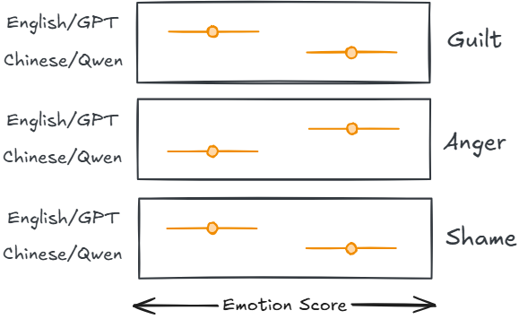
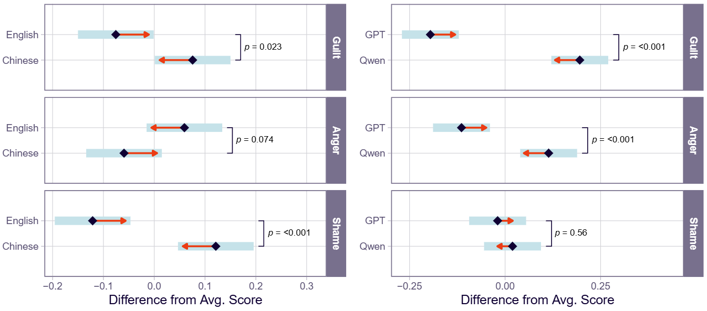
Partial support for cultural congruence
Predictions
Results
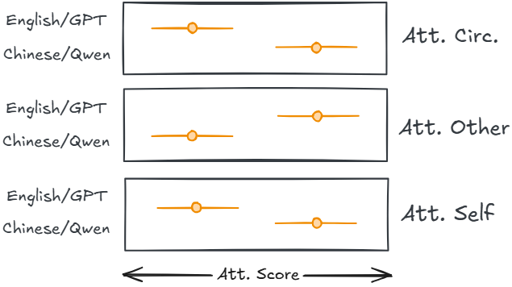
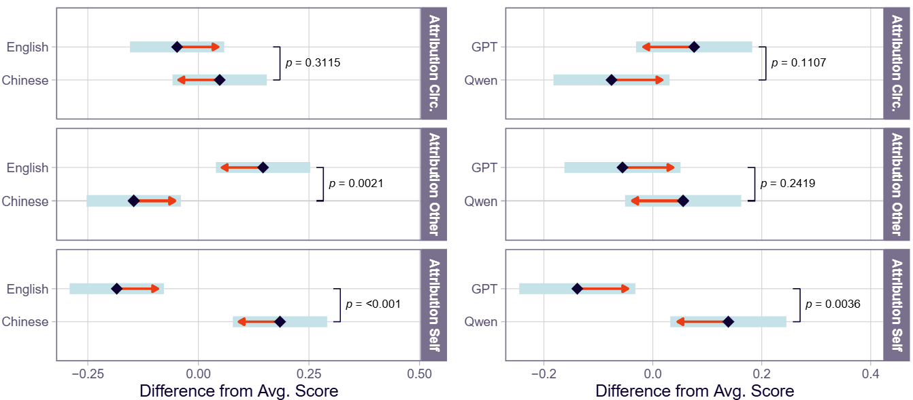
No support for cultural congruence
Predictions
Results
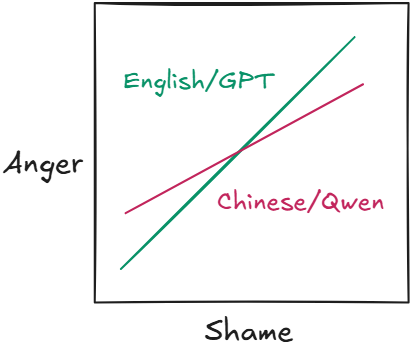
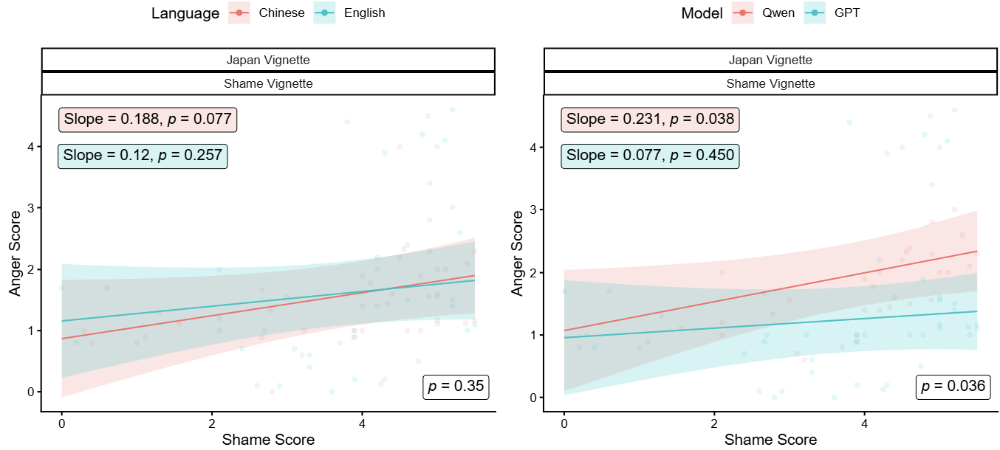
No support for cultural congruence
Predictions
Results
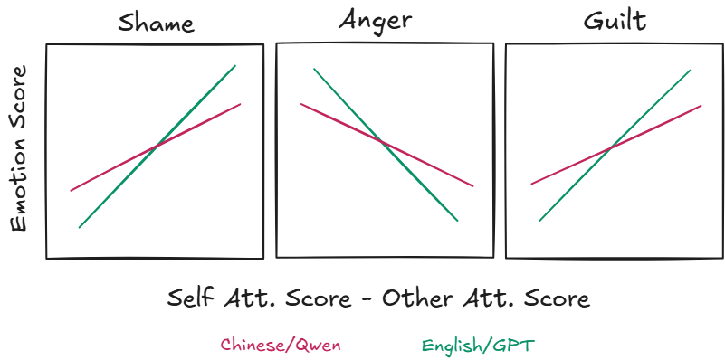
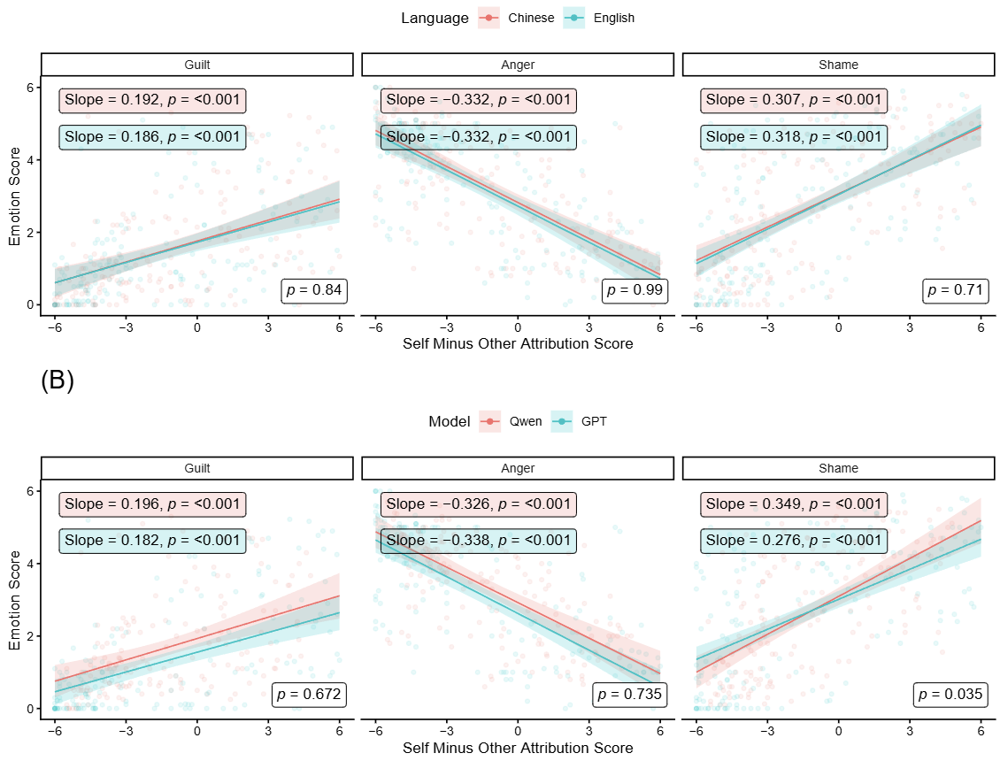
Cultural bias
- Relative difference between constructs for each culture are in the same direction
- In anger situations, Anger > Shame for both cultures, even though magnitude is different.
- Make predictions based on the most extreme cases
Cultural bias
Extreme case of Western bias
In Japanese shame situations
Anger \(\geq\) Shame
Extreme case of Eastern bias
In US Anger situations
Shame \(\geq\) Anger
Cultural bias results
- We found weak and partial evidence of both Western and Eastern biases.
Ratings: Cultural bias
Partial support for Western bias
Predictions
Results
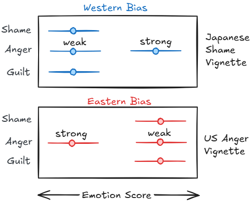
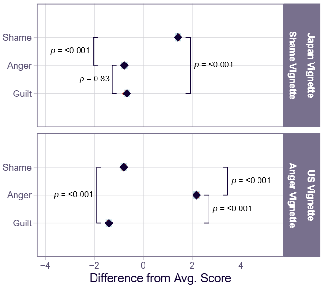
No evidence of a cultural bias
Predictions
Results
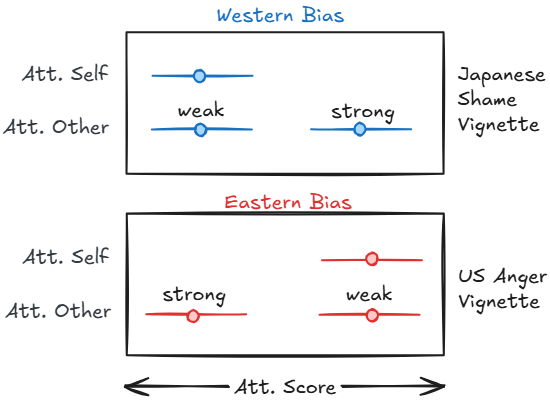
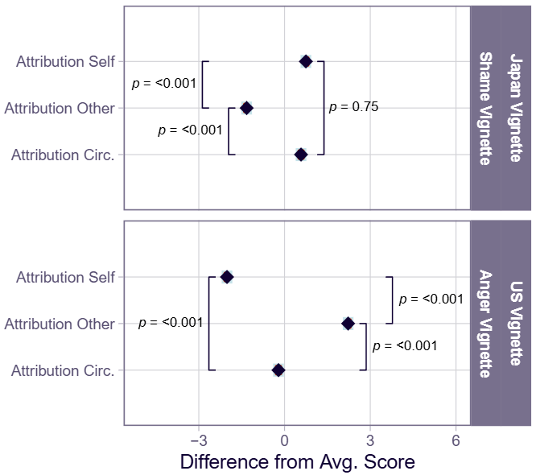
Weak evidence of a mostly Eastern bias, with a Western bias in Qwen
Predictions
Results
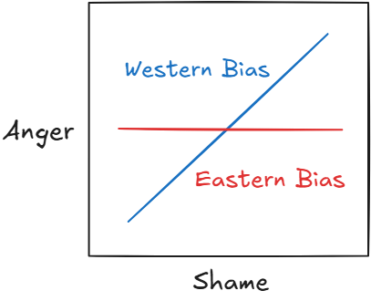

Study 1 conclusions
Partial support for cultural congruence
- Partial support for emotion and attribution levels.
- More support for attribution levels than emotion levels.
- No congruence for humiliated fury and importance of attribution.
- Prompt language more culturally congruent than prompt model.
Weak support for both Eastern and Western biases
- 2/12 results supported a Western bias
- Anger = Guilt in Japanese shame vignettes
- Humiliated fury in Qwen
- 3/12 results supported an Eastern bias
- No humilated fury in all conditions other than Qwen
Study 2
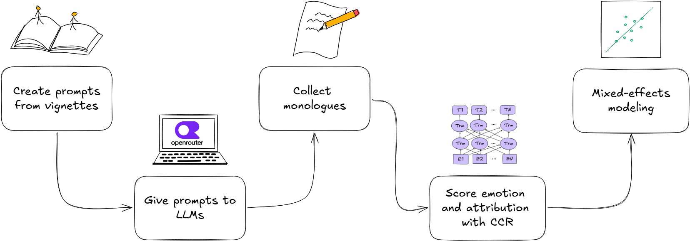
Prompts
Main vignette + monologues text
Monologues text:
Quote
How might John be thinking about the situation? Please write a realistic internal monologue that John might have.
CCR
What is it?
- Contextualized Construct Representations (CCR) is a method developed by Atari et al. (2023). It uses cosine similarity between two pieces of text to measure a construct.
- For example, we can look at the cosinse similarity between the word “anger” and the LLM response. The higher the CCR score, the closer the response is to the construct of “anger”.
CCR
What we measured
| Type of text | Score type |
|---|---|
| The emotion words alone | Emotions |
| Descriptions of each emotion | Emotions |
| Attribution questionnaire items from Yeo and Ong (2023) | Attribution |
Cultural congruence results
- We found no evidence of cultural congruence.
Monologues: Cultural congruence
No evidence of cultural congruence
Predictions
Results
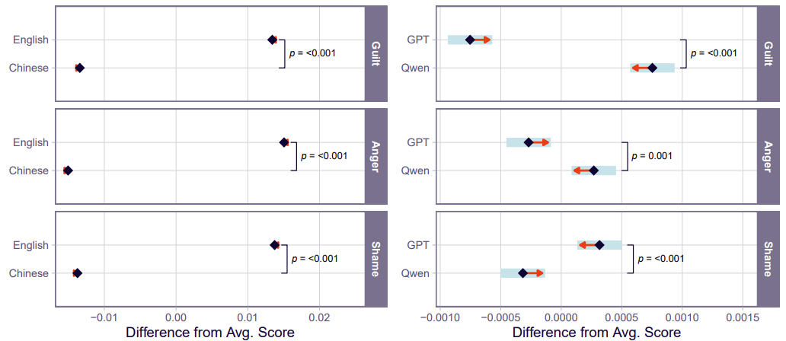
No evidence of cultural congruence
Predictions
Results
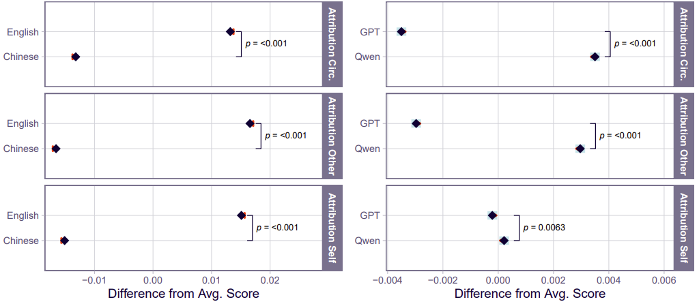
No evidence of cultural congruence
Predictions
Results

No evidence of cultural congruence
Predictions
Results
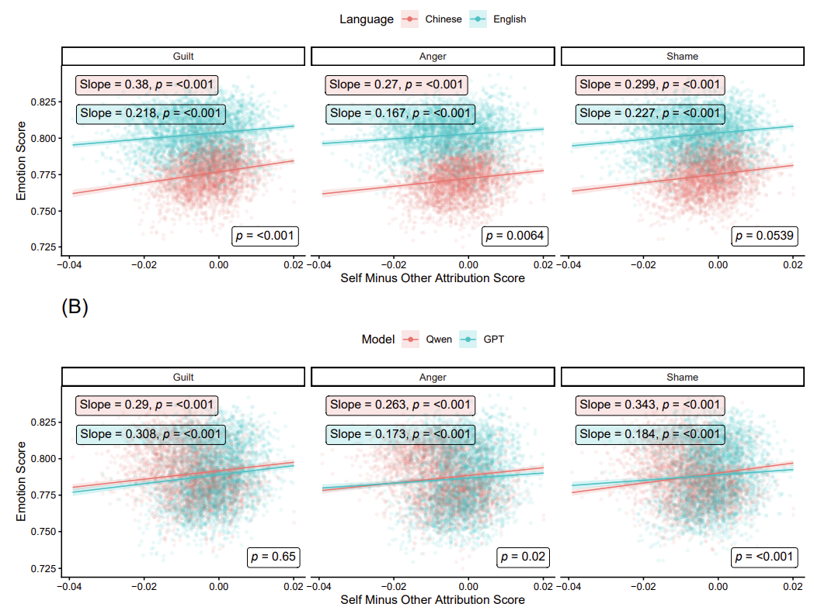
Cultural bias results
- We found more evidence of Western biases than Eastern biases.
Monologues: Cultural bias
Evidence of an Eastern bias
Predictions
Results
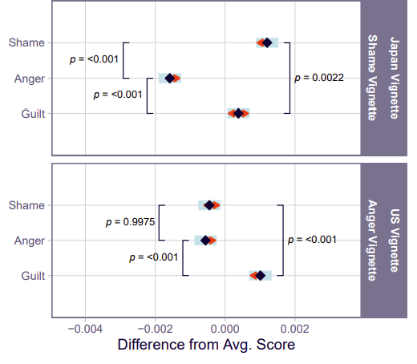
Evidence of a Western bias
Predictions
Results
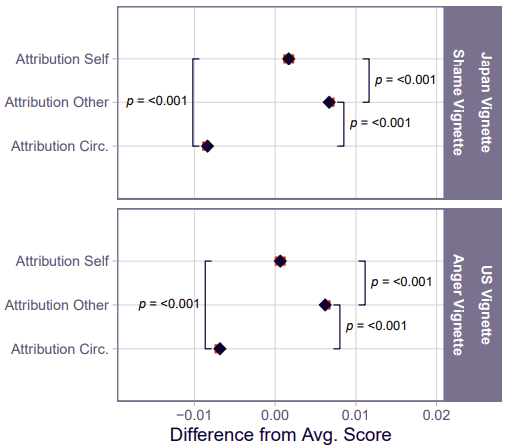
Evidence of a Western bias
Predictions
Results
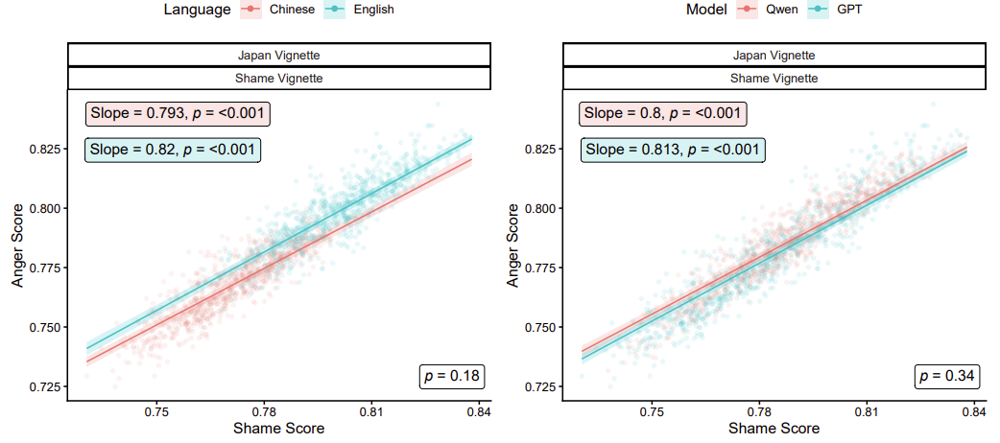
Study 2 conclusions
No support for cultural congruence
- English prompts resulted in higher scores across constructs.
- Qwen resulted in higher scores across constructs.
- No support for cultural congruence in monologues for any context.
Western bias > Eastern bias
- 8/12 results supported a Western bias.
- Attribution other > attribution self in Japanese shame vignettes.
- Humiliated fury was present for all conditions.
- 3/12 results supported an Eastern bias.
- Guilt > anger and shame = anger in US anger vignettes.
Summary
Cultural congruence
- Ratings had more culturally-congruent responses than monologues.
- Within ratings, only emotion levels and attribution levels showed cultural congruence. Attribution levels showed more cultural congruence than emotion levels.
Cultural biases
- Ratings had comparable evidence for Eastern and Western biases.
- Monologues had more evidence for Western biases than Eastern biases.
Discussion
- Our mixed findings regarding prompt language’s effect on cultural congruence is more in line with Dudy et al. (2024) than Lu et al. (2025).
- Our Western bias findings was not as strong and consistent like in the previous literature. This might be due to the limited ways in which we were able to formulate our predictions.
Limitations
- Our extreme predictions for cultural biases in emotion and attribution levels may instead measure “LLM biases” and not true cultural tendencies.
- Our monologues results show some unexpected findings. For instance, emotion levels do not properly track attribution levels nor vignette type. This could suggest that our CCR results are invalid.
- Not all Eastern biases are the same. A positive relationship between anger and shame could reflect humiliated fury existing at higher levels in China than Japan (Liang et al. 2024; Liu et al. 2024).
Future Studies
- Collect human monologues to more accurately assess for cultural bias.
- Manually annotate monologues
- Validate CCR scores
- Analyze the narrative style: Higher CCR scores for English monologues could be the result of a stronger narrative style characteristics of Western cultures (Bliss and McCabe 2008).
- Analyze the cognitive style in the “thinking field”: can a Western thinking style (intolerance of contradictions) explain the lack of association between anger and shame ratings (Nisbett et al. 2001)?
Thank you!
Ratings: model plots
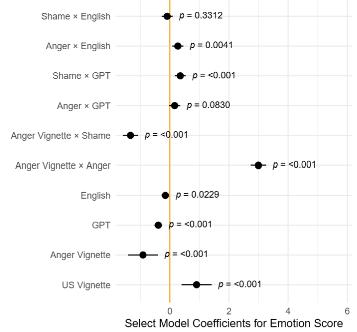
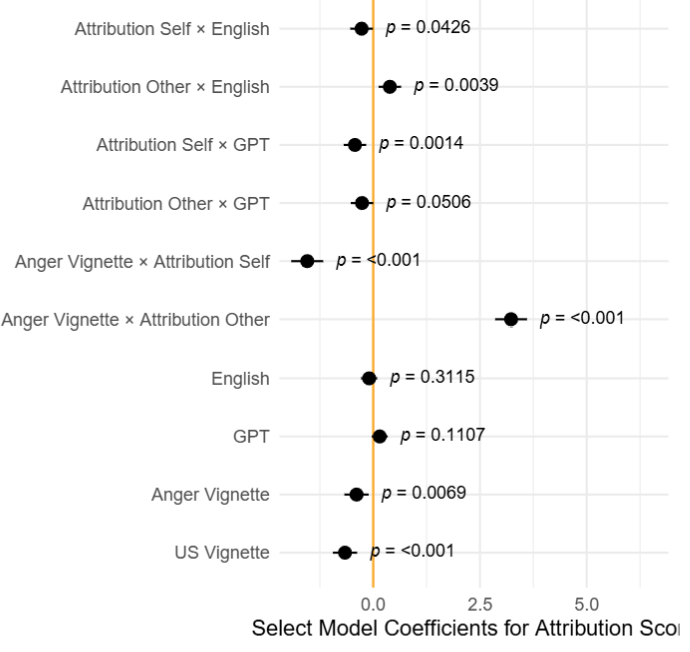
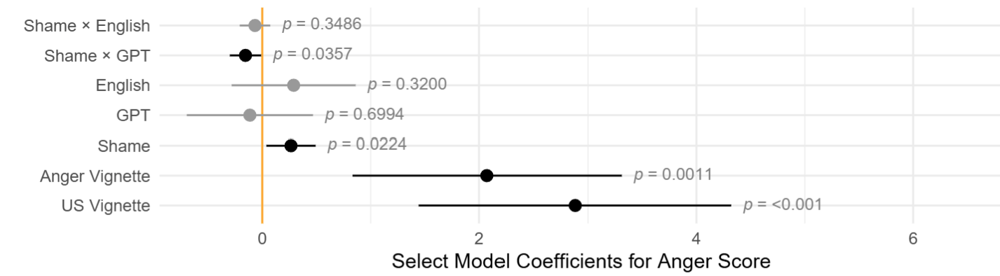
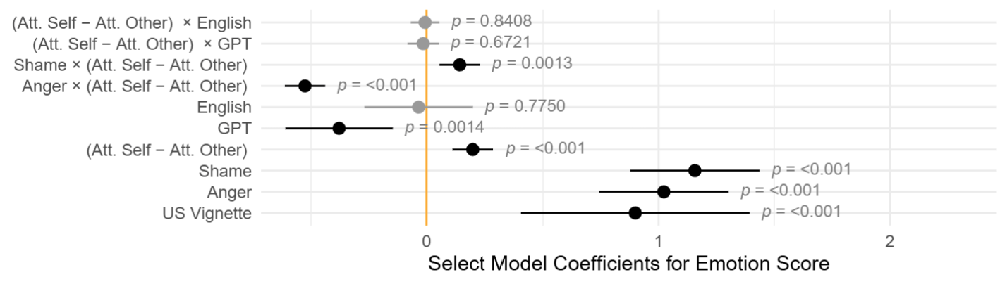
Monologues: Model plots
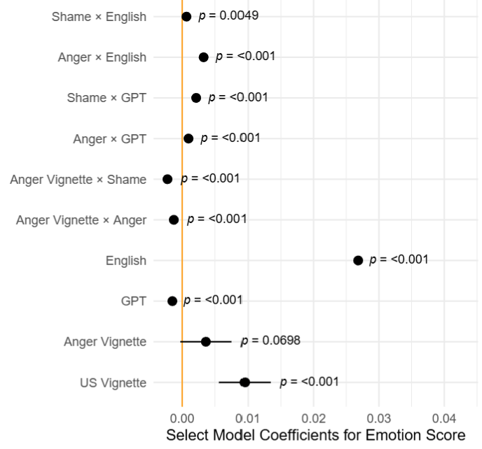
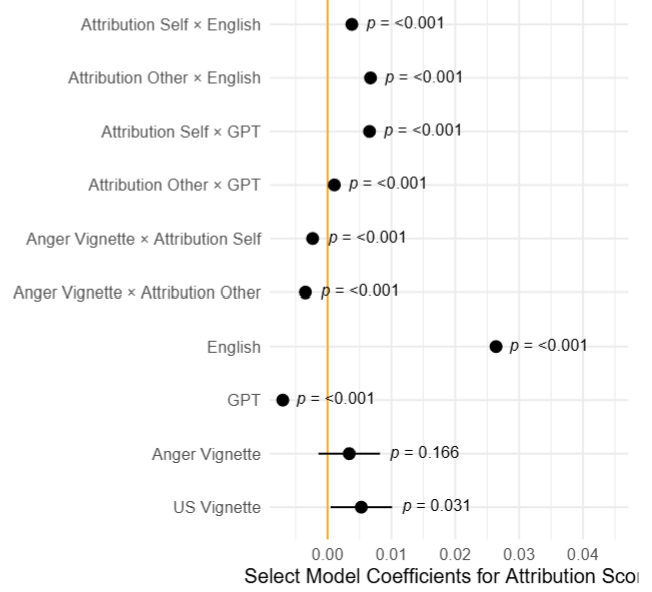
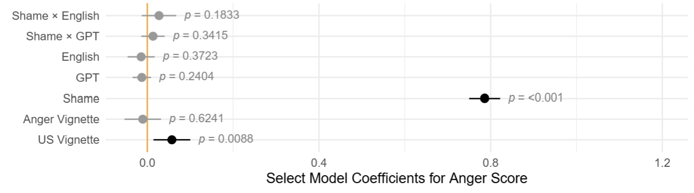
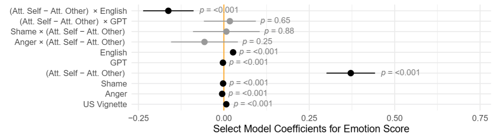